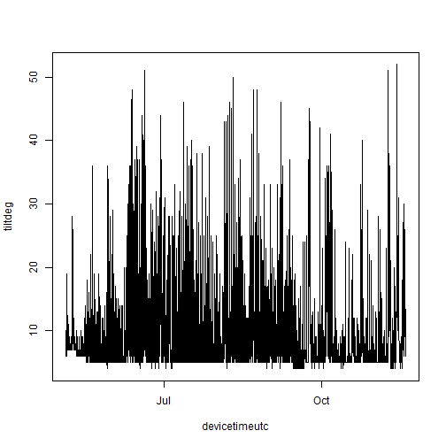
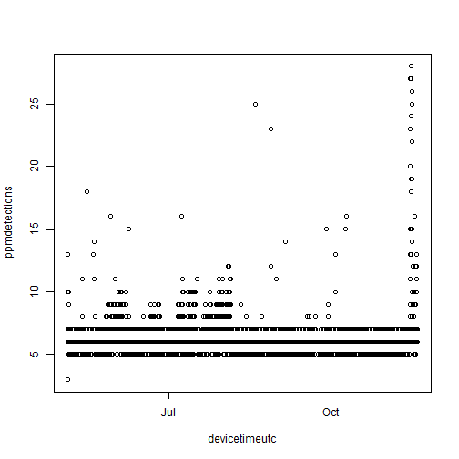

Extracting environmental data with `rvdat`
2024-01-10
Source:vignettes/matos-rvdat.Rmd
matos-rvdat.RmdWe often want to extract the environmental data that some of our
receivers log. You can do this by going into Innovasea’s VUE or Fathom
Connect programs and clicking a bunch of buttons, or you can do it
programmatically and reproducibly by combining matos and rvdat.
library(matos)
#> By continuing, you are agreeing to the ACT Network MATOS User
#> Agreement and Data Policy, Version 1.2:
#>
#> <https://matos.asascience.com/static/MATOS.User.Agreement.V1.1.pdf>
#>
library(rvdat)Download the data
First, log into your MATOS account.
matos_login()
#> ! Please log in.
#> ✔ Login successful!Next, tell rvdat the location of the
vdat.exe executable (check out the rvdat documentation
for more information on this).
vdat_here("vdat.exe")Using matos, I’m going to find the VDAT files associated
with the Mid-Bay
Chesapeake Backbone array. Note that things like temperature and
tilt are logged within the VRL/VDAT files, and so will be under the
“detections” file type.
detection_files <- list_project_files(
project = "UMCES Chesapeake Backbone, Mid-Bay",
file_type = "detections"
)
#> ℹ These projects are missing metadata as they have not yet synced
#> with OTN: "BTWaves Caribbean Acoustic Tagging", "CT DEEP Array
#> (2022-2026)", "ERDC_Brunswick", "SBU Eco-Pod", "SBU Landscape Lab
#> Array", "SBU NY Ocean Indicators", "UNH - Rainbow smelt", and "WCS
#> New York Sand Tiger Shark Study"
head(detection_files)
#> project file_type upload_date
#> 2 161 Tag Detections - .vfl file 2023-10-12
#> 4 161 Tag Detections - .vfl file 2023-09-13
#> 5 161 Tag Detections - .vfl file 2023-09-13
#> 6 161 Tag Detections - .vfl file 2023-09-13
#> 7 161 Tag Detections - .vfl file 2023-09-13
#> 8 161 Tag Detections - .vfl file 2023-09-13
#> file_name
#> 2 VR2AR_546323_20231012_1.vrl
#> 4 VR2AR_547715_20230912_1.vrl
#> 5 VR2AR_547714_20230912_1.vrl
#> 6 VR2AR_546476_20230912_1.vrl
#> 7 VR2AR_546470_20230912_1.vrl
#> 8 VR2AR_546462_20230912_1.vrl
#> url
#> 2 https://matos.asascience.com/projectfile/download/11087
#> 4 https://matos.asascience.com/projectfile/download/8003
#> 5 https://matos.asascience.com/projectfile/download/8002
#> 6 https://matos.asascience.com/projectfile/download/8001
#> 7 https://matos.asascience.com/projectfile/download/8000
#> 8 https://matos.asascience.com/projectfile/download/7999I’ll download the first file into a temporary directory.
get_project_file(
url = detection_files$url[1],
out_dir = tempdir()
)
#>
#> ── Downloading files ──────────────────────────────────────────────
#> ✔ File(s) saved to:
#> C:\Users\darpa2\AppData\Local\Temp\Rtmpo3atQK\VR2AR_546323_20231012_1.vrl
#>
#> ── Unzipping files ────────────────────────────────────────────────
#> [1] "C:\\Users\\darpa2\\AppData\\Local\\Temp\\Rtmpo3atQK\\VR2AR_546323_20231012_1.vrl"
vrl_file <- list.files(tempdir(), pattern = "vrl$", full.names = T)Convert VRL using rvdat
Now, I’ll use rvdat::vdat_to_folder to convert that file
into a folder of CSV files, each one representing one data type.
vdat_to_folder(
vrl_file,
outdir = tempdir()
)
#> ✔ File converted:
#> C:\Users\darpa2\AppData\Local\Temp\Rtmpo3atQK/VR2AR_546323_20231012_1.vrl
#> ℹ Files saved in:
#> C:\Users\darpa2\AppData\Local\Temp\Rtmpo3atQK/VR2AR_546323_20231012_1.csv-fathom-splitThere are quite a few files in there, but for this we’re going to
focus on the temperature records stored in TEMP.csv.
list.files(tempdir(), pattern = "fathom-split", full.names = T) |>
list.files()
#> [1] "ATTITUDE.csv" "BATTERY.csv"
#> [3] "CFG_CHANNEL.csv" "CFG_STUDY.csv"
#> [5] "CFG_TRANSMITTER.csv" "CLOCK_REF.csv"
#> [7] "DATA_SOURCE_FILE.csv" "DEPTH.csv"
#> [9] "DET.csv" "DIAG.csv"
#> [11] "EVENT.csv" "EVENT_INIT.csv"
#> [13] "EVENT_OFFLOAD.csv" "HEALTH_VR2AR.csv"
#> [15] "TEMP.csv"
bwt_file <- list.files(tempdir(), pattern = "TEMP", full.names = T, recursive = T)Read it into R
Let’s read in the data.
read.csv(bwt_file)
#> Error in read.table(file = file, header = header, sep = sep, quote = quote, : more columns than column namesAn error, oh no! Let’s see what’s causing it.
read.csv(bwt_file,
header = FALSE,
nrows = 5
)
#> V1 V2
#> 1 VEMCO DATA LOG 2.0.0
#> 2 TEMP_DESC Device Time (UTC)
#> 3 TEMP 2022-05-04 16:00:00
#> 4 TEMP 2022-05-04 17:00:00
#> 5 TEMP 2022-05-04 18:00:00
#> V3 V4
#> 1 vdat-7.0.0-20231107-14c992-release
#> 2 Time Time Offset (h)
#> 3
#> 4
#> 5
#> V5 V6 V7 V8
#> 1
#> 2 Time Correction (s) Model Serial Number Ambient (deg C)
#> 3 VR2AR-69 546323 13.558
#> 4 VR2AR-69 546323 12.869
#> 5 VR2AR-69 546323 12.827
#> V9
#> 1
#> 2 Internal (deg C)
#> 3
#> 4
#> 5Ah, the data doesn’t really start until the second row. Skip the first one and take a look.
bwt <- read.csv(
bwt_file,
skip = 1
)
head(bwt)
#> TEMP_DESC Device.Time..UTC. Time Time.Offset..h.
#> 1 TEMP 2022-05-04 16:00:00 NA NA
#> 2 TEMP 2022-05-04 17:00:00 NA NA
#> 3 TEMP 2022-05-04 18:00:00 NA NA
#> 4 TEMP 2022-05-04 19:00:00 NA NA
#> 5 TEMP 2022-05-04 20:00:00 NA NA
#> 6 TEMP 2022-05-04 21:00:00 NA NA
#> Time.Correction..s. Model Serial.Number Ambient..deg.C.
#> 1 NA VR2AR-69 546323 13.558
#> 2 NA VR2AR-69 546323 12.869
#> 3 NA VR2AR-69 546323 12.827
#> 4 NA VR2AR-69 546323 12.806
#> 5 NA VR2AR-69 546323 12.806
#> 6 NA VR2AR-69 546323 12.827
#> Internal..deg.C.
#> 1 NA
#> 2 NA
#> 3 NA
#> 4 NA
#> 5 NA
#> 6 NAGreat! The data are in. I’m going to clean up the names a little bit and convert the time column from a character string to POSIX time.
names(bwt) <- gsub("[_\\.]", "", tolower(names(bwt)))
names(bwt)
#> [1] "tempdesc" "devicetimeutc" "time"
#> [4] "timeoffseth" "timecorrections" "model"
#> [7] "serialnumber" "ambientdegc" "internaldegc"
bwt$devicetimeutc <- as.POSIXct(bwt$devicetimeutc,
tz = "UTC",
format = "%F %T"
)
head(bwt)
#> tempdesc devicetimeutc time timeoffseth timecorrections
#> 1 TEMP 2022-05-04 16:00:00 NA NA NA
#> 2 TEMP 2022-05-04 17:00:00 NA NA NA
#> 3 TEMP 2022-05-04 18:00:00 NA NA NA
#> 4 TEMP 2022-05-04 19:00:00 NA NA NA
#> 5 TEMP 2022-05-04 20:00:00 NA NA NA
#> 6 TEMP 2022-05-04 21:00:00 NA NA NA
#> model serialnumber ambientdegc internaldegc
#> 1 VR2AR-69 546323 13.558 NA
#> 2 VR2AR-69 546323 12.869 NA
#> 3 VR2AR-69 546323 12.827 NA
#> 4 VR2AR-69 546323 12.806 NA
#> 5 VR2AR-69 546323 12.806 NA
#> 6 VR2AR-69 546323 12.827 NASee what we’ve got
Now that we have our time series, let’s see what it looks like!
plot(ambientdegc ~ devicetimeutc,
data = bwt,
type = "l"
)Other variables
We can pull out other variables in a similar manner. Take, for
example, receiver tilt, located in ATTITUDE.csv.
env_import <- function(file) {
hold <- list.files(
tempdir(),
pattern = file,
full.names = T,
recursive = T
) |>
read.csv(skip = 1)
names(hold) <- gsub("[_\\.]", "", tolower(names(hold)))
hold$devicetimeutc <- as.POSIXct(hold$devicetimeutc,
tz = "UTC",
format = "%F %T"
)
hold
}
tilt <- env_import("ATTITUDE")
plot(tiltdeg ~ devicetimeutc, data = tilt, type = "l")
Depth, in DEPTH.csv:
depth <- env_import("DEPTH")
plot(depthm ~ devicetimeutc, data = depth)Battery, in BATTERY.csv:
battery <- env_import("BATTERY")
plot(batteryvoltagev ~ devicetimeutc, data = battery)Noise, which is actually in the diagnostic file
DIAG.csv:
diagnostics <- env_import("DIAG")
plot(noisemeanmv ~ devicetimeutc, data = diagnostics)Hourly summaries of pings and detections are also in the diagnositc file:
plot(ppmdetections ~ devicetimeutc, data = diagnostics)
plot(ppmpings ~ devicetimeutc, data = diagnostics)But are really located in DET.csv.
dets <- env_import("DET")
head(dets[, ])
#> detdesc devicetimeutc time timeoffseth timecorrections
#> 1 DET 2022-05-04 15:28:58 NA NA NA
#> 2 DET 2022-05-04 15:39:32 NA NA NA
#> 3 DET 2022-05-04 15:49:37 NA NA NA
#> 4 DET 2022-05-04 16:09:11 NA NA NA
#> 5 DET 2022-05-04 16:18:23 NA NA NA
#> 6 DET 2022-05-04 16:27:44 NA NA NA
#> model serialnumber channel detectiontype fullid id
#> 1 VR2AR-69 546323 1 PPM A69-1601-60787 60787
#> 2 VR2AR-69 546323 1 PPM A69-1601-60787 60787
#> 3 VR2AR-69 546323 1 PPM A69-1601-60787 60787
#> 4 VR2AR-69 546323 1 PPM A69-1601-60787 60787
#> 5 VR2AR-69 546323 1 PPM A69-1601-60787 60787
#> 6 VR2AR-69 546323 1 PPM A69-1601-60787 60787
#> rawdata transmitterserial signalstrengthdb noisedb gaindb
#> 1 NA NA NA NA NA
#> 2 NA NA NA NA NA
#> 3 NA NA NA NA NA
#> 4 NA NA NA NA NA
#> 5 NA NA NA NA NA
#> 6 NA NA NA NA NA
#> qualityscore stationname latitude longitude gpshdop
#> 1 NA NA NA NA NA
#> 2 NA NA NA NA NA
#> 3 NA NA NA NA NA
#> 4 NA NA NA NA NA
#> 5 NA NA NA NA NA
#> 6 NA NA NA NA NAThese data were gleaned from a particular receiver programmed in a
particular way – note that many of the data fields are empty! Depending
on the receiver, how you programmed it, and the arguments you passed to
rvdat (time correction, anyone?), your split CSV could look
rather different.